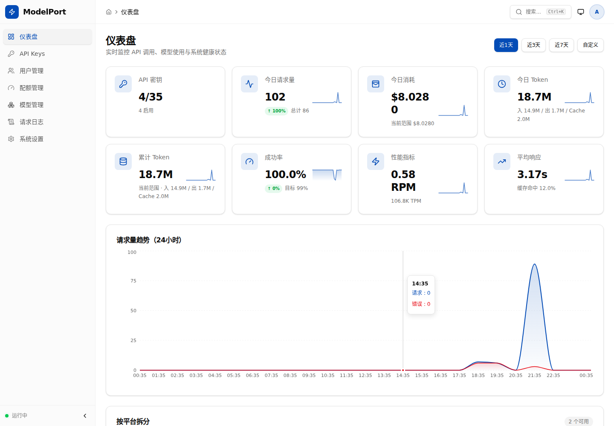
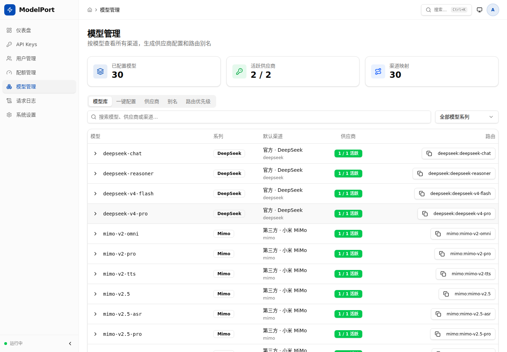
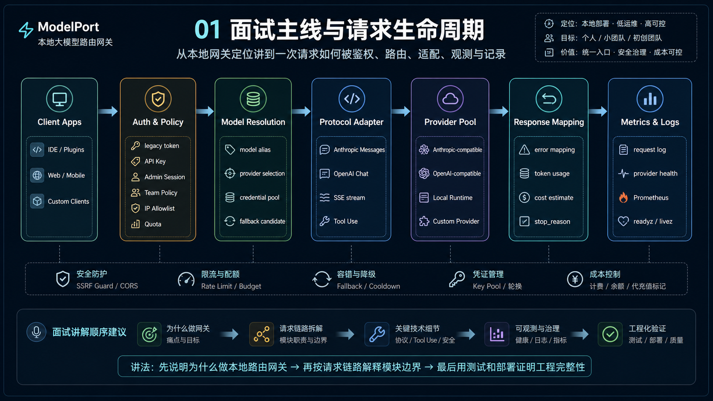

模型越多，业务越不应该理解 Provider 方言
Provider 的模型名、鉴权头、Tool Use、SSE 事件、失败语义与 usage 口径各不相同。每个应用自己适配，会让路由、成本控制与排障证据分散到业务代码。
Infrastructure Case Study · 重点案例
一个面向 Claude Code、VS Code Claude 与 API 客户端的自托管模型网关。它将 Anthropic Messages 请求路由到 Anthropic-compatible 或 OpenAI-compatible Provider，并把协议差异、Tool Use、鉴权、配额、健康状态和观测证据留在业务应用之外。

Provider 的模型名、鉴权头、Tool Use、SSE 事件、失败语义与 usage 口径各不相同。每个应用自己适配，会让路由、成本控制与排障证据分散到业务代码。
以 Anthropic Messages 为客户端契约，在服务端依次完成身份、策略、模型解析、Provider 尝试、协议映射和观测记录；不把“HTTP 200”误当作流式请求已经成功。
界面用于操作同一套后端事实源：API Key、用户、配额、模型目录、Provider、请求日志、健康与配置诊断都落回网关控制面，而不是在前端维护第二套路由真相。

对外提供 POST /v1/messages 与模型目录；Anthropic 可直通，OpenAI Chat 经过聚焦的请求、响应和 SSE 转换。
覆盖常见 Tool Call 和增量参数事件，并对帧大小、流大小、完成信号与重放去重设置明确限制。
按 provider:model、递归别名、精确模型、前缀与默认 Provider 解析，仅在可重试失败上有边界降级。
API Key 绑定真实用户，叠加模型、Provider、IP、用户配额和滚动费用窗口；只有真正发出的上游尝试才计量。
禁止重定向，约束 body、SSE、超时与并发；stream permit 持有到响应体完成或释放。
提供 React 控制台、配置检查、Provider doctor、Prometheus、备份恢复、Docker Compose 与 systemd 模板。
接收 Anthropic Messages，分配 request ID，限制 body 并校验 max_tokens。
鉴权 API Key，检查用户状态、IP、模型、Provider、配额与费用窗口。
解析别名和模型，选择凭证池，跳过冷却 Provider 并生成有界尝试计划。
直通 Anthropic，或映射 OpenAI Chat、Tool Use 与 SSE 增量事件。
记录响应、usage 来源、费用估算、Provider 结果、健康与 Prometheus 指标。

仅对 transport、protocol、429 与 5xx 等失败尝试下一条可接收模型的路径；流式响应头发出后不跨 Provider 重放。
身份、策略、额度、能力和凭证检查发生在出站前；只有确实发送给 Provider 的尝试才进入配额与费用记录。
upstream-returned 和 local-estimate 保留证据来源；本地价格表用于运维判断，但不冒充 Provider 最终账单。
仓库提供本地无费用检查、控制面验收、Tool Use mock 链路和完整检查脚本。真实上游验证可能产生费用，因此单独放在 Provider 兼容矩阵中记录。
model-gate config inspect model-gate providers doctor scripts/config-validate.sh scripts/smoke-test.sh scripts/tool-use-acceptance.sh scripts/check-all.sh